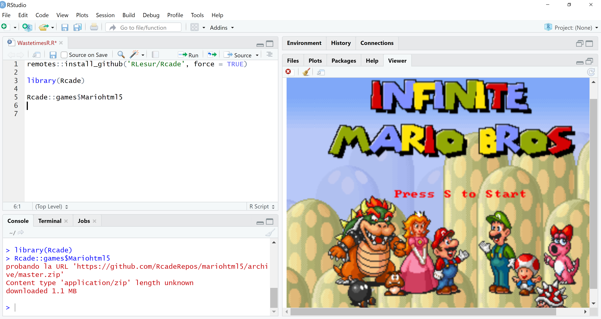

11 Juegos para procrastinar con RStudio
Con el paquete Rcade4 es posible acceder a juegos como Tetris, Mario Bros, Spider Solitaire, entre otros.
El paquete debe ser instalado desde GitHub:
remotes::install_github('RLesur/Rcade', force = TRUE)
library(Rcade)La siguiente función permite saber la lista de juevos disponibles:
## 2048 (not yet installed)
## BoulderDash (not yet installed)
## CathTheEgg (not yet installed)
## Core (not yet installed)
## CustomTetris (not yet installed)
## GreenMahjong (not yet installed)
## Mariohtml5 (installed)
## Pacman (not yet installed)
## Pond (not yet installed)
## SpiderSolitaire (not yet installed)
## SURVIVOR (not yet installed)Con el fin de instalar y poder jugar algunos de los juegos, es necesario llamar el juego. Por ejemplo, para instalar Mario Bros el código sería:
Lo cual muestra lo siguiente:

Los otros juegos se instalan con las siguientes funciones:
Rcade::games
Rcade::games$`2048`
Rcade::games$Pacman
Rcade::games$SpiderSolitaire
Rcade::games$BoulderDash
Rcade::games$CathTheEgg
Rcade::games$CustomTetris
Rcade::games$Core
Rcade::games$SURVIVORMás información sobre el paquete puede ser consultada en https://github.com/rlesur/rcade↩